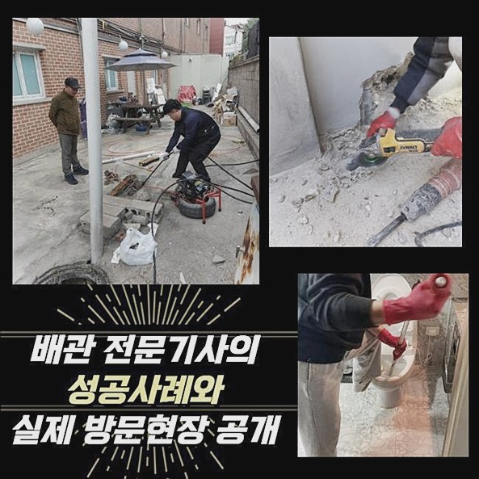
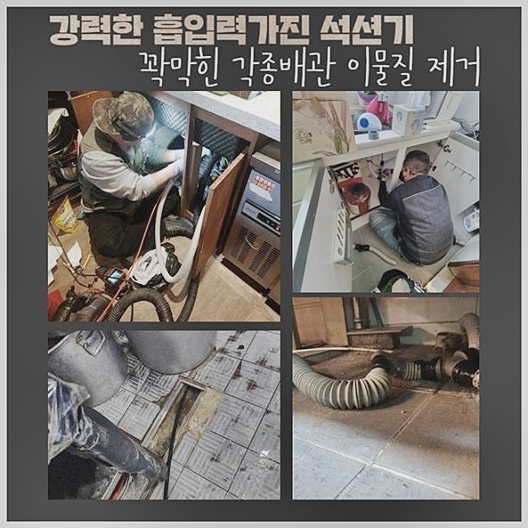
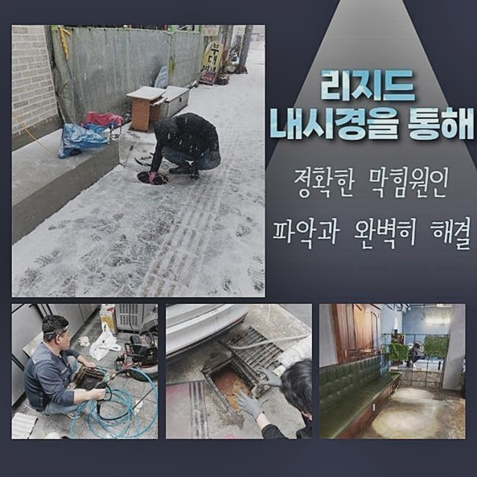
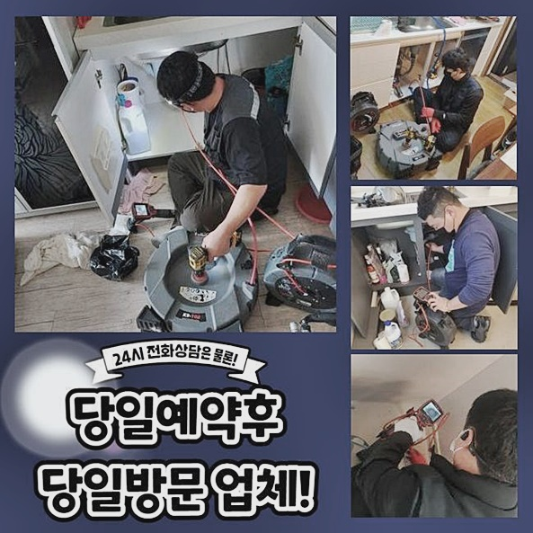
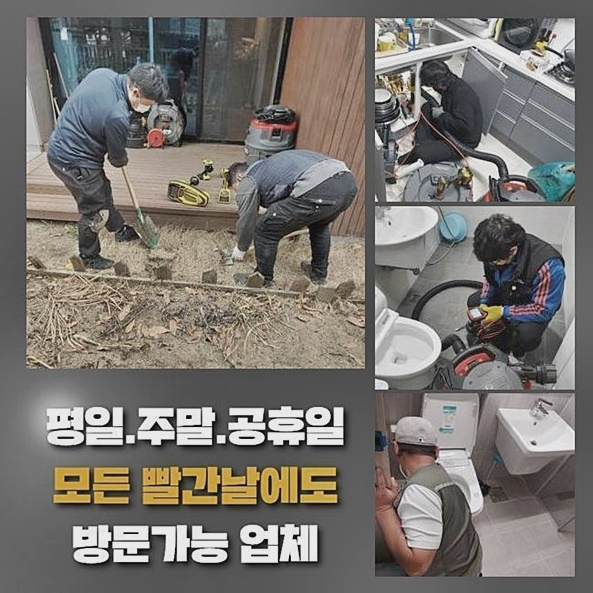
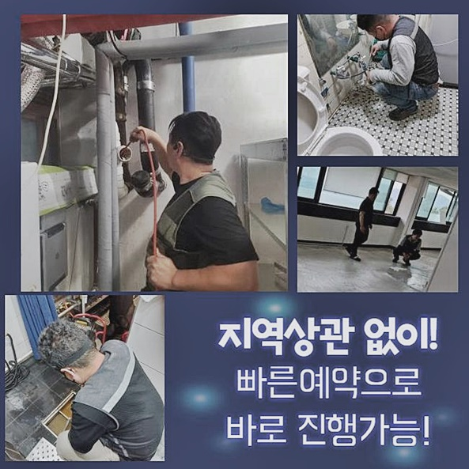
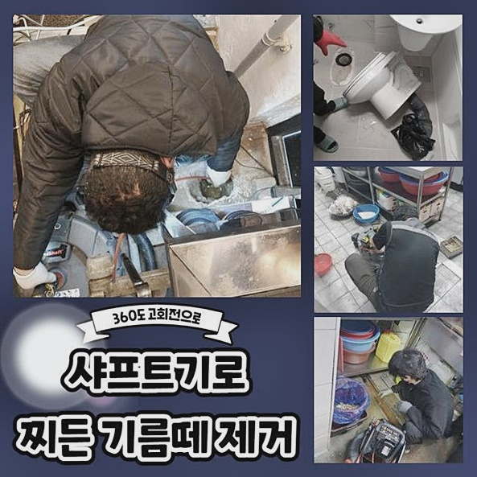

🏠 포천 설운동욕실바닥막힘 포천동 하수구뚫어주는곳 설비
용인시 처인구 배관막힘 전문 시공 후기

📋 작업 개요
- 위치: 용인시 처인구, 수원시 영통구, 화성시 동탄
- 서비스 유형: 배관막힘, 고압세척, 내시경점검
- 작업 일시:
- 업체명: 하수구수사대 (010-5615-2118)
🔍 문제 상황
포천 설운동욕실바닥막힘 포천동 하수구뚫어주는곳 설비
실제로 현장을 가보면 하수구 불통이 일어나서 나름 뚫어뻥으로 실시해 봤지만 그다지 효과가 없어서 어떻게 해야하나 망설이시는 케이스들이 상당수 있습니다
전문인원이 없는 경우라면 어떻게 고쳐가야 할지 알고있는 실력 좋은 전문가에게 조언을 요청하려는 결정이 시설물을 정상화하는데 지원책이 되어줄 겁니다
그렇지만 경험이 없는 분들이라면 안타깝게도 어떤 업체에 맡길지 배경 지식이 없다보니 한참 고심하시는 분도 다수 존재할 것입니다
오늘의 현장 설명을 통해 전문성 담긴 알짜배기 지식들을 알아가셨으면 좋겠네요
이번에 완수를 했던 장소는 하수구 막힘으로 하수를 틀어보면 미처 빠지지 못하고 흘러넘치는 사안과 마주하고 있는 중이었기에 단순하지는 않아보였어요
물이 매끄러운 동작으로 배출되는 것이 아니고 지속적으로 머문다면 대개 파이프 안쪽으로 노폐물이 상당량 누적되어 버려서 만들어지는 상황인거죠
막힘건 해소를 위해선 원인을 분석해주고 보완하는 방향이 올바르게 막힘건을 탈피할 수 있는 길입니다
현장을 빠르게 찾아서 오물이 배관 구조 중에서도 근방에 정체하고 있는지 확인하려고 하수구 마개를 개방해서 보았습니다
관로에 노폐물이 상당량 끼어 있음을 쉽게 알게 되었어요
단일 관로가 아닌 교차로의 잘못이 발생했다고 추정하고 확증을 얻으려고 심층까지도 세밀하게 중계를 해주는 카메라 장비로 점검을 해줍니다

🔎 원인 분석
💡 전문가 진단: 정밀 진단 장비를 사용하여 슬러지의 고착 여부를 판명하고 타격/세척 작업을 실시했습니다.
눈으로는 관찰이 불가한 지점까지 기계를 배치해서 보니 방대한 양의 노페물들과 유분기가 한가득이었어요
험난한 환경 속에서는 혼자 좋다고 소문난 클리너를 이것저것 혼합해서 써도 미미한 흐름의 조정은 만들어져도 결국에는 수포로 돌아갈 것입니다
말라붙은 오물의 양에 따라서 설정하는 작업 기구도 차이점이 있는데 오늘은 고압세척을 해주는 기기를 통해 처리하기로 정했습니다
파이프 안에 자리한 노폐물을 남김 없이 치워줄 힘센 작업을 이어가야 했을 정도로 오염도가 꽤나 높았습니다
고압수세척기를 켜서 타격감을 주면 여기서 오염된 하수도 범람할 수 있고 관로를 메우고 있던 물질들이 단숨에 흘러나올테니 여과기나 흡입 장치도 옆에 두었습니다
세월의 흐름을 맞아온 배관이라면 다소 자극에 취약할 것이므로 상황에 맞는 알맞은 힘으로 세심하게 조정하는 능력도 필수로 갖춰야 할 것입니다
정규 청소업무가 부드럽게 종료 수순을 밟는다면 확실한 확립을 하고자 카메라 장치로 재차 탐색하여 바로 마감해도 될지 검토합니다
이물질을 다 정돈했다 싶어도 미해결된 곳은 없나 여러 차례 검증을 하기에 재발이 일어나지 않아요
추가적인 현장의 막힘건 해소를 일궈내기 위하여 긴급하다고 말씀을 하셨던 작업 구역으로 옮겨갔습니다
멀쩡한 기능이 이어지던 배수시스템이 불능이 되며 악취를 동반한 역류까지 동반된다고 하셨습니다
보통의 빌라나 아파트는 여러 세대들이 모여 살면서 적립되었을 오물들과 잔수가 쌓여나가면서 마비까지 이르게 합니다
작업 노선을 확립하기 위하여 오염된 각종 이물질들이 상당량 고여 있을 내측을 관측해 나갑니다

🔧 작업 과정
특수한 내시경으로 검토하니 옥외로 이어지는 연결라인이 말썽이라는 사실을 알아차리게 되었는데요
배관의 자체적인 모양이 다소 휘어있었고 다수의 장소에서 오는 파이프와 이어진 결합부가 다수인 것도 특성이었어요
파이프라인의 꼴과 현황에 대해 철저히 염두에 두지 않는다면 갑작스럽게 직면하는 이슈들을 수습하기 힘들어집니다
이것도 처리해야하니 업무가 지연되고 보수가 부실하게 끝나게 되니 시작하기 앞선 진단에 혼을 모두 쏟고 있어요
원인 신뢰성을 구축하려고 붙은 장소나 생성 시기를 추정했고 이어진 쪽에 달라붙은 슬러지를 최종 발견했습니다
이런 기름때의 종류는 고압의 물을 쏴서 묵은 때를 씻어준다면 처리가 되겠다 싶었죠
무작정 물을 쏘지 않고 우선 하수로의 구조적 특성을 충분하게 고려를 하고서 내측으로 진입해서 드러나는 물질들부터 긁어내려가야 합니다
옥외로 향하는 라인에 인접한 지대가 바로 주요한 쟁점이라고 보였기에 목표물을 설정해두고 잔여물을 흡입해 줬어요
실외의 메인관로는 설비에 대한 이해도를 소유하지 못하면 감당하기가 난감한데 여러 포트폴리오를 갖고 있고 작업허가까지 받으니 믿고 맡겨주셔도 된답니다
미리 노선을 세운대로 관통부터 해준 뒤에 하단부에 숨어있는 이물질 제거를 위해 고압세척을 해주는 기기를 세팅합니다
이 기기의 작동방식은 에너지를 가진 물줄기로 점성이 있거나 견고한 대상물들을 없애주어 신속하게 하수구의 재편성이라는 결과를 할 수 있게 도와주죠
적용 범주를 할당하고 물 호스를 장착하여 정해진 장소에 안착하고 파이프를 따라 붙어있는 기름 덩어리를 타격해서 순차적으로 없애 나갔습니다
발포하는 도중에도 내시경 도구를 넣어서 모니터를 충분히 하여 정도를 판가름해 주었습니다
하수도 세척을 쭉 이어가다가 마감에 들어갈지 봤더니 시원찮은 곳이 없어서 보완이 잘 완결됐다 싶더라고요
어떻게 후관리를 해나갈지도 유지기간에 영향을 미치니 관리요강에 대한 조언도 해드리며 같은 경우가 빚어지면 연락주시라고 알려드렸죠
하수구 고장으로 수리를 요구하시면 즉각적으로 스케줄을 잡아서 달려가서 상황을 살피고 세정을 받았으나 효과를 제공 받지 못한다면 아예 시공비를 요구하지 않습니다
불현듯 막혀버리는 하수구는 갖가지 사유로 촉발되며 작업지마다 속성들이 다르므로 대처법도 상이합니다
별의 별 종류의 막힘들을 이겨낸 전적이 있고 상황에 맞는 대처 요령도 형성되어 있습니다
배관의 옵션은 필수이며 구조적인 견조함 같은 사안을 모두 취합하여 작업 방향과 방법을 정합니다


✅ 작업 완료
오류를 만들게 된 기저의 동기를 정확히 밝히고난 후에 본격적으로 착수해야 2차적 오류가 생기는 걸 차단할 수 있게 됩니다
통수가 이뤄지지 않는 상황은 갑작스러운 시점에 맞닥뜨리는 문제입니다
유독 수돗물이 느릿느릿 내려가거나 냄새가 나는 등의 힌트들이 생길 것 입니다
물을 일상적으로 쓰다가 뭔가 달라졌다는 느낌이 들 때 지체없이 연락해 주시면 기대 이상으로 간편하게 본래 기능으로 회복시켜 드립니다
늘 출동을 준비하고 있으니 도움을 요청하시면 신속하게 방문하겠습니다




⚠️ 하수구 배관 막힘 예방 및 관리 가이드
- ✅ 머리카락, 비닐, 물티슈 등 물에 분해되지 않는 이물질은 절대 흘려보내지 마세요.
- ✅ 기름기 많은 식기는 설거지 전 키친타올로 먼저 기름때를 닦아내세요.
- ✅ 주기적으로 배수구에 뜨거운 물을 가득 부어주어 유지방 고착을 방지하세요.
- ✅ 작업 후 1년 이내 재발 시 무상 A/S 보증 서비스를 제공합니다.
💡 핵심 정리
- 확실한 장비 작업(내시경 점검 및 샤프트 스케일링)으로 원인을 뿌리 뽑습니다.
- 작업 후 1년 이내에 동일한 부위 재발 시 100% 무상 A/S 서비스를 보장합니다.
- 서울 · 경기 · 인천 전 지역에 24시간 언제든 긴급 출동할 수 있도록 항시 대기 중입니다.
❓ 자주 묻는 질문 (FAQ)
🚨 용인시 처인구 배관막힘 문제로 고민이신가요?
정확한 원인 진단과 확실한 시공으로 재발 없는 해결을 약속드립니다.
24시간 긴급 출동 | 서울 · 경기 · 인천 전지역 | 1년 내 재발 시 무상 A/S